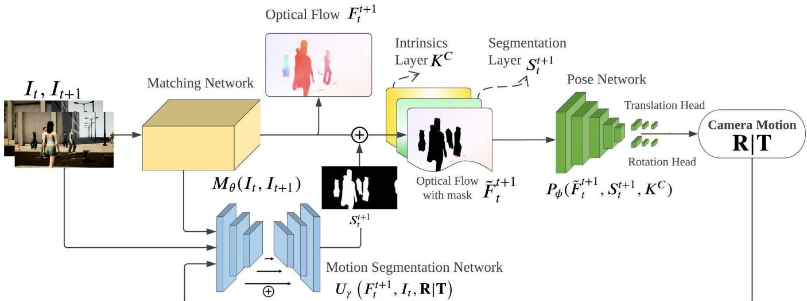
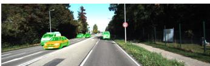
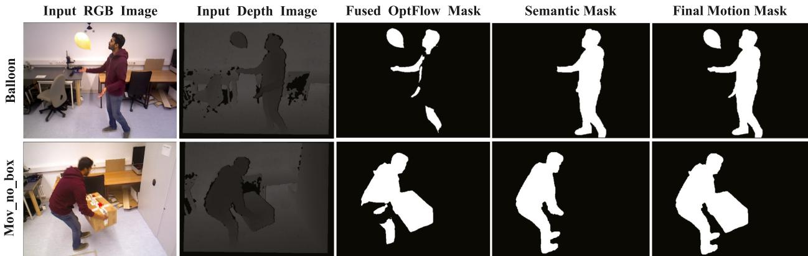
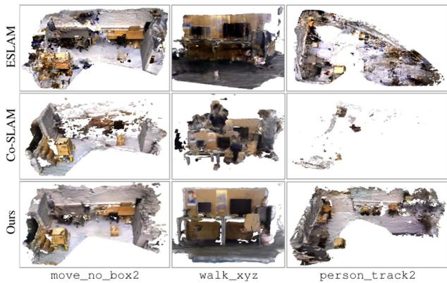
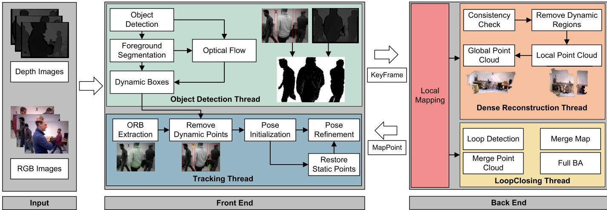
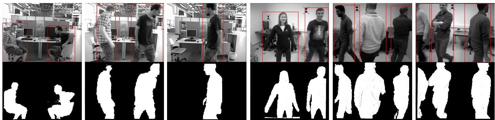
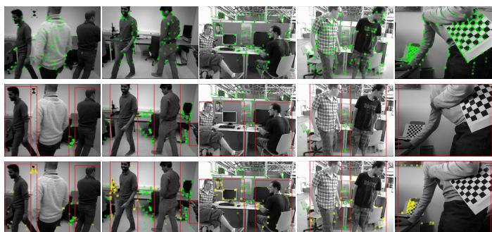
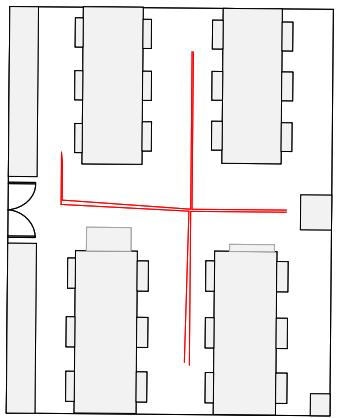

原图注（Fig. 1）：A overview of the DytanVO. (a) Input frame at t0 and t1; (b) Optical flow from matching network; (c) Motion segmentation after iterations; (d) Trajectory on AirDOS-Shibuya crowded scene. Ours is the only learning-based VO that keeps track.
（中译：总览。(a) t0/t1 输入帧；(b) 匹配网络光流；(c) 迭代后运动分割；(d) AirDOS-Shibuya 拥挤场景轨迹，本文是唯一保持追踪的学习式 VO。） 怎么看这张图：① (c) 的分割掩码就是「判定依据」的可视化；② (d) 在满街行人的场景里轨迹仍贴合，说明「动态 = 掩码」这条路在纯 VO 上走得通。注意：它没有地图，只输出位姿。

原图注（Fig. 2）：Overview of our three-stage network architecture. A matching network estimates optical flow; a pose network estimates pose based on optical flow without dynamic movements; a motion segmentation network outputs a probability mask of the dynamicness. The matching network is forwarded only once while the pose and segmentation networks iterate.
（中译：三阶段网络架构总览。匹配网络估光流；位姿网络在去掉动态运动的光流上估位姿；运动分割网络输出动态性概率掩码。匹配网络只前向一次，位姿与分割网络迭代。） 怎么看这张图：这张图是「联合精化」的工程实现——光流只算一次，位姿和分割互相喂、迭代几次收敛。它是 0068 框架里「判定+处理」的端到端版本。

原图注（Fig. 4）：Qualitative results on dynamic sequences in KITTI Odometry 01, 03, 04 and 10. First row: segmentation outputs of moving objects; second row: trajectory aligned with ground truth. Ours produces precise odometry given large dynamic areas.
（中译：KITTI 01/03/04/10 动态序列定性结果。上排：移动物体分割；下排：与真值对齐的轨迹。本文在图像大面积动态时仍给出精确里程计。） 怎么看这张图：即使大面积都是动态（红色分割），下排轨迹依然准——这是「掩码加权位姿」有效性的硬证据。
原图注（Fig. 1）：Schematic illustration of the proposed method. Given a series of RGB-D frames, we simultaneously construct the implicit map and camera pose via multi-resolution hash grid …
（中译：方法示意。给定 RGB-D 帧序列，用多分辨率哈希网格同时构建隐式地图与相机位姿……） 怎么看这张图：看它列出的全部监督损失（SDF / 深度 / 颜色 / edge warp），以及「动态掩码」在哪一步介入——它过滤掉打在动态物体上的无效采样光线。这正是「闸门」的位置。

原图注（Fig. 2）：Qualitative results of the generation motion mask. By iteratively optimizing the optical flow mask, the fused optical mask can be more precise without noises. The semantic mask can only identify dynamic objects within predefined categories. The best results are obtained with our method.
（中译：运动掩码生成定性结果。迭代优化光流掩码后融合更准、无噪声；语义掩码只能识别预定义类别的动态物体；本文方法最佳。） 怎么看这张图：① 看「迭代优化光流掩码 → 融合更准」；② 注意图注自己承认：语义掩码只能识别预定义类别——这是它的边界，未定义类别的动态会漏检。

原图注（Fig. 3）：Visual comparison of the reconstructed meshes on the BONN and TUM RGB-D datasets. Our results are more complete and accurate without the dynamic object floaters.
（中译：BONN 与 TUM RGB-D 数据集上重建网格的视觉对比。本文结果更完整准确，且无动态物体漂浮物。） 怎么看这张图：「无 floaters」是它最核心的卖点——对照本章题眼「整块幽灵几何」，这张图证明它的闸门确实挡住了幽灵。
它在 TUM RGB-D、Bonn 动态序列上优于 ORB-SLAM3；真实高动态环境（Fig.7）ORB-SLAM3 明显漂移，本文贴近真值。和 RoDyn 形成「同目标两条技术路线」对照：RoDyn 在隐式场层面去动态，OVD 在特征点层面去动态。

原图注（Fig. 1）：Framework of OVD-SLAM. The RGB images pass through object detection network, and the depth images are divided into foreground and background. Then, we use optical flow and the result of foreground segmentation to determine boxes containing dynamic objects …
（中译：OVD-SLAM 框架。RGB 过检测网络，深度图分成前景 / 背景，再用光流与前景分割结果判定含动态物体的框……） 怎么看这张图：① 注意「object detection network」在这里是 YOLOv5，不是开放词汇检测；② 整条流程是「语义定框 → 光流定动态 → 权重降权 → 残点回收」，这是它 0068 框架的可视化。

原图注（Fig. 2）：Results of foreground and background segmentation. First row: bounding boxes obtained by YOLOv5; second row: pixel-level clustering by our method.
（中译：前后景分割结果。上排：YOLOv5 得到的边界框；下排：本文像素级聚类。） 怎么看这张图：这张图再次坐实「标题写 OVD、正文只用 YOLOv5 固定类别」——上排框来自 YOLOv5，且只能识别预定义类别。这是理解本篇「名不副实」的关键证据。

原图注（Fig. 3）：Comparison results of points distribution. ORB-SLAM3 / deleting all points in dynamic boxes directly / our method. Green points: outside dynamic boxes; yellow points: static points.
（中译：点分布对比。ORB-SLAM3 / 直接删动态框内所有点 / 本文方法。绿点：动态框外；黄点：静态点。） 怎么看这张图：① 中间「直接删动态框」太狠，会丢掉移动物体上的静态点；② 本文（右）更优——它恢复移动物体上的静态附着点，这正是它和「粗暴删框」的区别。

原图注（Fig. 7）：Top view of the experimental site and results of real highly dynamic environments. The trajectory of ORB-SLAM3 occurs obvious drift … our estimation trajectory is similar to the real trajectory.
（中译：实验场地俯视图与真实高动态环境结果。ORB-SLAM3 轨迹明显漂移，本文估计轨迹接近真实轨迹。） 怎么看这张图：这是它「在线、真实高动态」的招牌证据——ORB-SLAM3 漂了，本文压住了。再次说明：在特征点层面去动态，工程上非常实用。